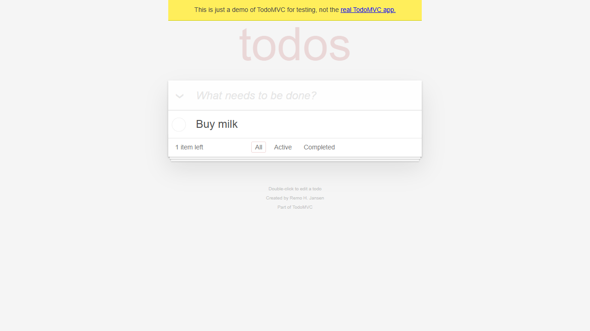

evidence/raw/RUN-CMDCHECK-03/TC-TODO-001/TC-TODO-001__case__fullpage__20261029T102736-759.png生成时间：2026-10-29T18:29:36+08:00
运行 ID：RUN-CMDCHECK-03
目标：https://demo.playwright.dev/todomvc
状态：通过
验证 https://demo.playwright.dev/todomvc 的核心交互、输入边界、状态过滤与失败取证链路。仅陈述本机实际执行且可追溯的结果。
| 项目 | 值 |
|---|---|
| python | 3.13.9 |
| platform | Windows-11-10.0.26340-SP0 |
| pytest | pytest |
| target | https://demo.playwright.dev/todomvc |
| 用例 ID | 标题 | 状态 | 证据数 | 日志 |
|---|---|---|---|---|
| TC-TODO-001 | 新增待办 | 通过 | 7 | evidence/logs/RUN-CMDCHECK-03/TC-TODO-001.log |
状态：通过
预期：True
实际：断言通过
日志：evidence/logs/RUN-CMDCHECK-03/TC-TODO-001.log
| # | 断言 | 预期 | 实际 | 结果 |
|---|---|---|---|---|
| 1 | 待办列表包含新增项 | ['Buy milk'] | ['Buy milk'] | 通过 |
| 2 | 剩余计数为 1 | 1 item left | 1 item left | 通过 |
| 3 | 底部状态栏可见 | True | True | 通过 |
evidence/raw/RUN-CMDCHECK-03/TC-TODO-001/TC-TODO-001__exploration__element__20261029T102720Z.png
evidence/raw/RUN-CMDCHECK-03/TC-TODO-001/TC-TODO-001__exploration__viewport__20261029T102721Z.pngevidence/raw/RUN-CMDCHECK-03/TC-TODO-001/TC-TODO-001__case__element__20261029T102736-653.pngevidence/raw/RUN-CMDCHECK-03/TC-TODO-001/TC-TODO-001__case__fullpage__20261029T102736-759.png
evidence/raw/RUN-CMDCHECK-03/TC-TODO-001/TC-TODO-001__final__viewport__20261029T102736-822.png未登记产品缺陷。若有 xfailed 用例，它只用于验证失败取证链路，不等同于产品缺陷。
本轮未生成差异图；有效截图证据见第 4 节。
已登记 7，校验通过 7；缺失 0；哈希不一致 0。
JUnit：
控制台：
tests=1 failures=0 errors=0 xfailed=0
本轮功能用例全部通过；本轮无受控预期失败用例。
像素差异不等同于产品缺陷；未执行场景不会标记为通过；比赛前需确认 AI 工具合规要求。